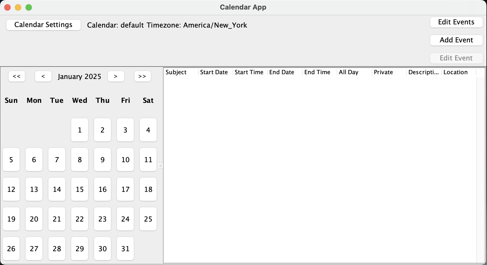
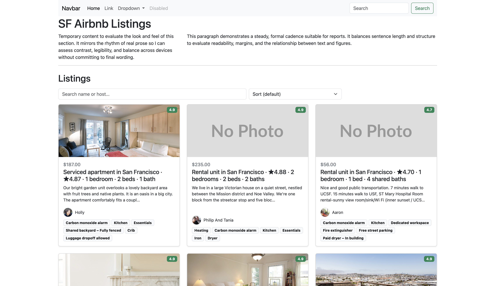

Projects

Grill & Go
Full-stack app for a sandwich shop pairing a static frontend with an Express API layer backed by MongoDB.
- Menu, orders, promotions, and employees via REST APIs
- Customer authentication with persistent profiles
- Modern UI with admin and shopper flows
LostNFound
Full-stack platform for Northeastern community to report, browse, and reclaim lost items from a unified dashboard.
- Post new finds with photos and details
- Search and filter active listings
- Profile dashboard to manage submissions


Calendar Application
Desktop calendar with events CRUD, recurring schedules, reminders, multiple calendars and time zones.
- Month / Week / Day views
- Clean MVC and OOP design
- Reminders & recurrence rules
AI Semantic Search
Sentence-Transformers + FAISS on AG News. High recall@10 with smaller index and lower latency than exact search.
- FAISS: FlatIP / IVF-Flat / IVF-PQ
- Evaluation: recall@k, index size, latency
- Reproducible experimentation workflow


SF Airbnb Listings Analysis
EDA on San Francisco listings — pricing patterns, neighborhood trends, and availability signals.
- Cleaning, feature engineering, visualization
- Price & occupancy trends by neighborhood
- Clear charts with takeaways